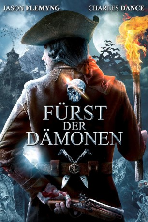

Alternativ: Viy
 
 IMDB-Wertung: 5.3 / 10
IMDB-Wertung: 5.3 / 10  Metascore:
Metascore: 
Der Kartenzeichner Jonathan Green macht sich im 18. Jahrhundert auf den Weg, um als Erster den kompletten Umfang der Erde zu vermessen. Nachdem er durch Transsylvanien und die Karpaten gereist ist, findet er sich jedoch bald verloren in einem kleinen Dorf inmitten von undurchdringlichen Wäldern wieder, in denen dichter Nebel Normalzustand zu sein scheint. Die Bewohner sehen anders als alle Leute aus, denen der Reisende jemals begegnet ist. Äußerlich ähneln die nicht gerade hilfsbereiten Menschen eher Piraten und sind zudem davon überzeugt, dass sie sich vor jedwedem Bösen beschützen können. Jonathan wird hingegen bald klar, dass eine düstere Macht schon längst von den Seelen der Bewohner Besitz ergriffen hat und nur darauf wartet, in die Welt hinauszuströmen.
Jahr: 2014
Dauer: 127 Minuten
FSK: 12
Land: Russland Studio: Sunfilm EntertainmentTonspuren: DTS - ,
Untertitel: Deutsch,
Auflösung: 1080p (1904x1080) Größe: 6901 MB
Genre: Abenteuer, Fantasy, Mystery, Thriller
Regisseur: Oleg Stepchenko
Drehbuch: Nikolay Gogol, Aleksandr Karpov, Oleg Stepchenko
Soundtrack: Anton Garcia
Darsteller:
 Jason Flemyng als Dzhonatan Grin
Jason Flemyng als Dzhonatan Grin Oleg Taktarov als Gritsko
Oleg Taktarov als Gritsko Charles Dance als V roli lorda Dadli
Charles Dance als V roli lorda Dadli Aleksey Chadov als Petrus
Aleksey Chadov als PetrusDatei: X:\2014(A-F)\Fürst der Dämonen (2014, FSK12, 1904x1080) 3D.mkv seit 02.07.2015
Festplatte: HD 2013(I-Z)-2014(A-Z)
 Es gibt insgesamt 119 Filme in der Gruppe '2014(A-F)'
Es gibt insgesamt 119 Filme in der Gruppe '2014(A-F)'